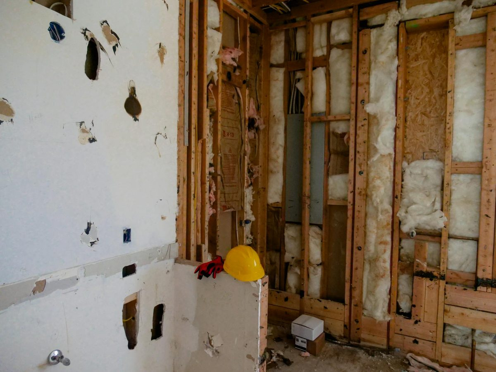

Closed cell spray foam insulation is the highest-performing insulation product available for Knoxville homes and buildings. With an R-value of approximately 7 per inch, an integrated vapor barrier, and added structural rigidity, closed cell foam is the right call when you need maximum performance in a Knoxville crawl space, rim joist, or below-grade wall. Your Knoxville spray foam team sprays closed cell foam across Knox, Blount, and Anderson County year-round.

Closed cell spray foam is a dense, rigid polyurethane foam with roughly R-7 per inch and vapor-barrier performance, ideal for Knoxville crawl spaces, rim joists and below-grade walls. Typical installed cost in Knoxville runs $1.50 to $5.00 per square foot, with closed cell at the top of that range. The process is a free in-home assessment, a written quote, substrate prep and spraying in 1-inch lifts, then a 24-hour cure. See the Knoxville pricing guide for a full breakdown.
Closed cell spray polyurethane foam (ccSPF) is a two-component spray-applied insulation that expands rapidly when sprayed and cures into a dense, rigid plastic. The "closed cell" refers to the structure of the foam: each microscopic cell is sealed, holding a low-conductivity gas that gives the foam its high R-value. A 2-inch lift of closed cell foam delivers an R-value of about 14, qualifies as a Class II vapor retarder, and adds measurable racking strength to the wall or roof deck it is sprayed on.
Closed cell foam was originally developed for industrial applications. Over the last 25 years it has become a standard product for high-performance residential and light commercial construction. In Knoxville, where humidity is a real factor much of the year, closed cell foam is the go-to product anywhere moisture management matters.
Closed cell spray foam in Knoxville TN costs $3.00 to $5.00 per square foot installed at a 2-inch lift in 2026. For a typical 1,500 square foot Knoxville home, full attic coverage at code-recommended R-49 (about 7 inches of closed cell) runs $4,500 to $7,500. A crawl space encapsulation with 2 inches of closed cell on the rim joist and walls typically runs $2,500 to $4,500.
Pricing varies based on lift thickness (more inches = more material cost), accessibility (a tight Bearden crawl runs more than a walk-in attic), removal of existing insulation, and substrate prep. Closed cell carries a real raw-material premium over open cell - the chemicals are more expensive and the foam is denser, so you are buying more product per square foot at any given thickness.
| Application | Typical Knoxville Cost |
|---|---|
| Rim joist (whole home) | $800 - $2,500 |
| Crawl space | $1,500 - $4,500 |
| Attic (1,500 sq ft home) | $4,500 - $7,500 |
| Whole home retrofit | $8,000 - $20,000+ |
| Metal building / pole barn | $2.50 - $6.00 per sq ft |
The question every Knoxville homeowner asks: which foam should I use? The short answer is that closed cell wins anywhere moisture, water, or structural strength matters, and open cell wins anywhere cost-per-R is the priority and vapor permeability is acceptable.
| Property | Closed Cell | Open Cell |
|---|---|---|
| R-value per inch | ~7.0 | ~3.5 |
| Density | ~2 lb/cu ft | ~0.5 lb/cu ft |
| Vapor barrier | Yes (at 2"+) | No |
| Sound dampening | Moderate | High |
| Structural strength | Yes | No |
| Cost per sq ft | $3 - $5 | $1.50 - $3.50 |
| Best for in Knoxville | Crawl spaces, rim joists, exterior walls | Attics, interior walls |
For a deeper breakdown, see our closed cell vs open cell guide for Tennessee homes.
Knoxville is in IECC Climate Zone 4A - mixed-humid. Summers regularly hit 90°F+ with dew points in the 70s. Winters drop below freezing 30+ nights per year. This combination makes closed cell foam particularly valuable in Knoxville because it stops both summer moisture drive into the assembly and winter heat loss. The vapor barrier nature of closed cell is critical for crawl spaces under older Bearden, Fountain City, and downtown Knoxville homes where dirt floors and high water tables drive constant moisture upward. Closed cell sprayed on the underside of the subfloor or on the crawl walls cuts that moisture path. TVA EnergyRight rebates and the federal IRA tax credit both apply to qualifying closed cell installs in Knoxville.
Call (865) 564-7823 - Mon-Sat 7AM-7PM. Free quotes available.